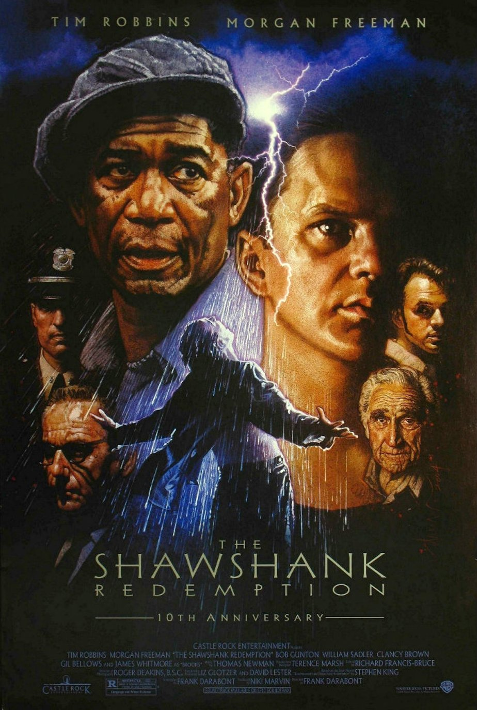

Of all the films I have seen over the years, The Shawshank Redemption may be the best at toying with your emotions. You’ll laugh, you’ll cry, you’ll get angry, you’ll even get disgusted. However, each of these emotions are warranted. Unlike other films, Shawshank refrains from feeling manipulative or fake. In essence, you’re watching a highlight tape of Andy Dufresne’s life. Under less creative minds, The Shawshank Redemption could have felt similar to a Lifetime movie. However, while Lifetime films (and lesser theatrical film for that matter) tell you how to feel, Shawshank shows you how to feel by crafting perfect scenes that express their emotion in the little details. Tim Robbins, who has never been better than in this film, cracks a little smirk on his face and you completely understand all his pain, agony, and hope for the future.
Obviously, Shawshank has more overt emotional moments as well. But, they only pack the punch that they do because the base was set in the quieter moments of the film. Another addition to the emotion comes from Morgan Freeman’s voice-over work throughout the film. Not only is his voice incredibly melodic and soothing, but it actually adds to the story in ways that many voice-overs have failed to replicate. Keeping up with the idea of showing and not telling, Freeman discusses the who, where, when, and (most importantly) the why instead of the what. The voice-over actually adds to each scene, providing for an improved context for each character while also allowing a more resonant emotional experience.
The emotion continues with the gorgeous music composed by Thomas Newman. Like I mentioned in my review of Pirates of the Caribbean: The Curse of the Black Pearl, the mark of a truly great score comes with its recognizability and how it accents the frames onscreen. Not only is it just absolutely beautiful, it perfectly heightens the feel of every single scene. People fail to realize how much a score can influence their thoughts towards a film. When the score swells at just the right moment, you can easily be brought to tears when paired with a powerful scene.
All these discussion points are great, but what really allows for The Shawshank Redemption to flourish is its realization of the idea of hope. While you may feel blue, there’s an ever-presenting feeling of light at the end of the tunnel. This is one of the main reasons for The Shawshank Redemption‘s watchability time and time again. It’s a difficult maneuver to accomplish. Weaving through dark tones while keeping the idea of hope alive could cause some serious tonal issues. If done incorrectly, it can confuse the audience by sending conflicting feelings. A scene that tells you to feel hopeful but act hopeless could even become laughable. But thanks to Frank Darabont and company, they account for the best parts of the film. shawshank redemptionimage via Business Insider Many movies would stay away from this combination altogether. This is precisely what makes Shawshank original and, above all else, sincere.
